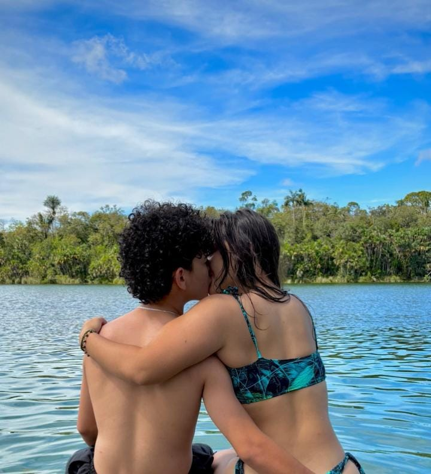
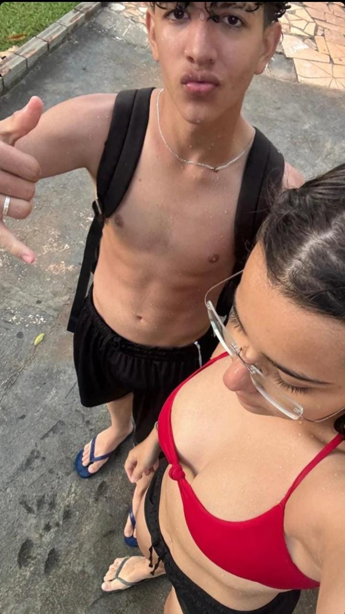
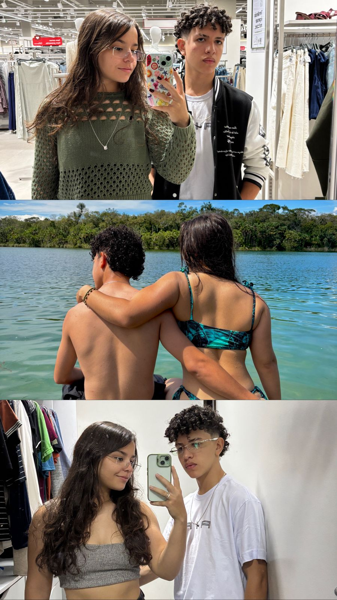

Quem Sou Eu
Meu nome é Jholemar Adonai Souza Balbino e atualmente estou cursando o ensino médio integrado ao técnico em Informática no Instituto Federal de Rondônia (IFRO) – Campus Vilhena. Ao longo da minha jornada acadêmica, tenho buscado não apenas excelência nos estudos, mas também desenvolvimento pessoal e consciência social. Sou uma pessoa determinada, resiliente e comprometida com meus objetivos. Acredito que o crescimento vem com disciplina, propósito e a vontade de fazer a diferença. Meu maior sonho é ingressar em uma universidade federal para cursar Direito. Essa escolha nasce do desejo profundo de promover a justiça, contribuir com a ordem social e transformar positivamente o mundo ao meu redor. Tenho plena convicção de que, com esforço e dedicação, é possível superar qualquer desafio e construir um futuro melhor — não apenas para mim, mas também para aqueles que me cercam.
Minha História
Pai sempre andou no estilo
Basquete no sangue
MINHA GATA
Relacionamentos verdadeiros, como boas amizades ou um namoro saudável, são pilares importantes na vida. Estar ao lado de alguém com quem posso conversar, rir, enfrentar desafios e dividir conquistas torna a caminhada mais leve e significativa. Minha namorada representa isso: uma parceira presente, com quem compartilho não só momentos bons, mas também os difíceis — sempre com respeito, apoio e cumplicidade..
  